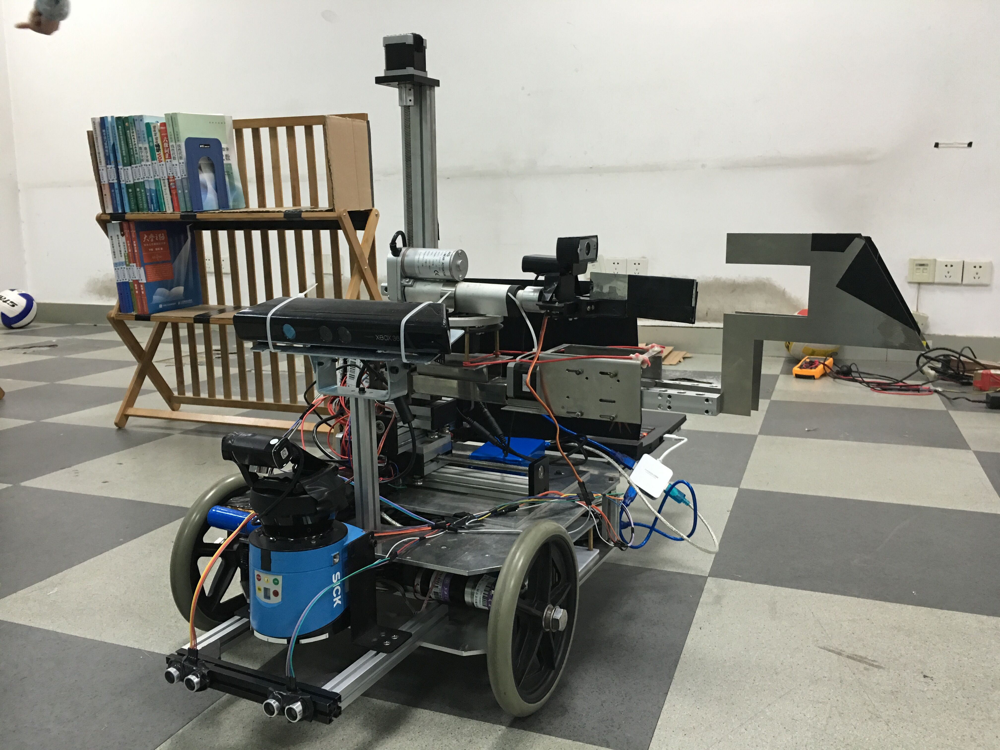
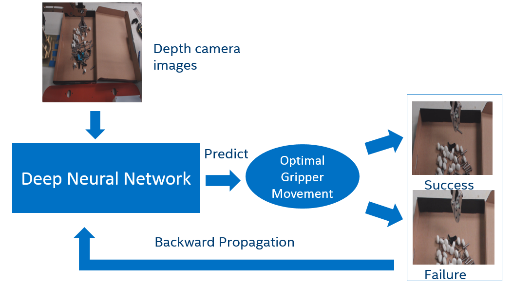
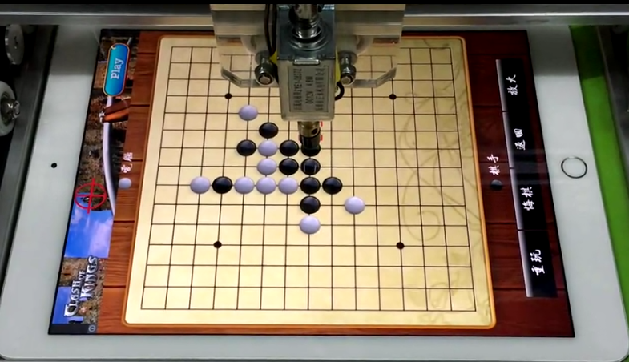

Home
I am a senior student from Shanghai Jiao Tong University (SJTU) and currently intern at Intel Asia Pacific R&D Center. Since things related to artificial intelligence have never failed to fascinate me, I chose Automation as my major and have developed several intelligent systems and robots during my college years. Recently, I specifically focus on the research of Computer Vison and Machine Learning, wanting to enable the AI to perceive and understand our complex world more intelligently. I hope to develop even more intelligent systems based on computer vision and deep learning to enhance the ability of clinical medicine to diagnose and predict diseases in my future career. Except for programming and computer engineering, I also love to travel, photograph and play sports.
Here are some tags to get a quick impression on me:
Computer Vision, Intelligent System, Photograph
Education
Shanghai Jiao Tong University School of Electronic Information and Electrical Engineering Bachelor of Engineering in Automation (expected June, 2017) Rank: Top 10% Awards: GuangHua Educational Scholarship, Top 4 in Dept. of Automation Arowana Corporation Scholarship, Top 3 in Dept. of Automation Meritorious Winner, Mathematical Contest in Modeling (MCM) Excellent Student Cadre, Shanghai Jiao Tong University Sep 2013 - Present 2016 2015 2015 2014 |
Publications
• Zhiqin Chen, Yufeng Zhang, Hesheng Wang, Weidong Chen. Real-time tag recognition based on morphology and local contrast. In IEEE International Conference on Real-time Computing and Robotics (RCAR), 2016. [pdf]
• Zhiqin Chen, Yufeng Zhang, Liqing Zhang. Dynamic gesture recognition in real-time based on generated datasets. Submitted to IEEE Conference on Computer Vision and Pattern Recognition (CVPR), 2017. [pdf]
Patents
• Co-inventor. Intelligence Library Management Robot. National Invention Patent, No. 201510257563.3 [Link]
• Co-inventor. Self-acting Book Manipulating Mechanism. National Invention Patent, No. 201510563923.2 [Link]
• Co-inventor. Automatic Device for Book Managing. National Invention Patent, No. 201510563922.8 [Link]
Research
I enjoy the innovative process of using artificial intelligence and programming to solve problems. This passion has translated into my participation in numerous research projects and internships during my college years.
Scene Classification Competition: IMAGENET Large Scale Visual Recognition Challenge 2016 (ILSVRC 2016) Yufeng Zhang, Yucheng Xing, Zhiqin Chen I was elected as the leader of our lab’s team for the challenge. Firstly, after evaluation on several neural networks, I selected the Inception-v3 net and fine-tuned it on MXNet with Places365-Challenge dataset, achieving 84.76% accuracy (the trained model can be downloaded here). Then, I proposed a fusion-feature neural network to classify scenes with 86.26% accuracy and my teammates in charge of processing the training datasets using Python. Finally, we combined our models together with multiple strategies to accomplish the accuracy at 87.34% (2.33% higher than the baseline). | |
 |
Video-based Dynamic Gesture Recognition Key Laboratory of Shanghai Education Commission for Intelligent Interaction and Cognitive Engineering, Department of Computer Science and Engineering, Shanghai Jiao Tong University Zhiqin Chen, Yufeng Zhang Unlike the method-based VIVA challenge, this unique research project aimed at recognizing dynamic gestures in complex backgrounds without the help of depth information. We developed a real-time dynamic gesture recognition system based on modified YOLO and discrete-HMM. Meanwhile, a novel method to artificially generate datasets by synthesizing target objects with background images was proposed and it proved to be effective for training models and saving time. Ultimately, with videos recorded in complex backgrounds, the mAP of static gesture detection achieved 94.85%, with all dynamic gestures recognizable. It led to a manuscript submitted to CVPR 2017 and currently under peer review [pdf]. |
|  |
Design and Implementation of Intelligent Library Management Robot MOE Key Laboratory of System Control and Information Processing, Department of Automation, Shanghai Jiao Tong University Yufeng Zhang, Zhiqin Chen, Pengfei Su An intelligent library management robot which could automatically pick up or return books was developed from scratch by our team. We designed and manufactured the components of the robot and led to three National Invention Patents (see patents). Then we implemented the motion control and serial communication between computer and Arduino Microcontroller to control the robot. Meanwhile, new algorithms for book identification and robot localization based on tag recognition was proposed and implemented by OpenCV, which led to a publication in IEEE-RCAR 2016 [pdf]. Finally, the intelligent robot came to life and led to ‘Excellence’ award in SJTU (watch demo here). |
|  |
Robotic Grasping Based on Learned Hand-eye Coordination Software and Services Group (SSG), Intel Asia Pacific R&D Center Yufeng Zhang, Junyi Xie Different from the traditional control methods of manipulator by hard-programming, this research aimed at training the robotic arm to grasp items by itself through learned hand-eye coordination. I developed and trained the deep neural network whose inputs are pairs of 3D images captured by Realsense and vectors of the manipulator’s motors. I also implemented the whole flow of the robotic arm to attempt to grasp items automatically, which was guided by the possibility of success provided by the trained deep neural network. |
|  |
Cyber DIP – An intelligent iPad manipulator Course: Fundamentals of Digital Image Processing Yufeng Zhang In this project, I implemented an intelligent iPad manipulator. It can automatically find the application of Five-In-A-Row game on iPad and win over the application’s AI in the game (watch demo here). The whole work of image processing was implemented by OpenCV, and my AI algorithms for Five-In-A-Row game and control of manipulator were based on C++. What’s more, what is fun is that the intelligent manipulator can also arrange applications randomly placed on iPad into different folders with regards to their colors (watch demo here). |
Photographs
I am so passionate to learn more about our beautiful world and make acquaintance with amazing friends through travelling. Till now, I have visited over 60 cities in 6 countries. It is travelling that makes me fall in love with photographing. Meanwhile, photographing also motivates me to go on my passion for travelling. Here are some selected photographs of mine.


Please feel free to contact me for more information via email: zhang_yufeng@sjtu.edu.cn.
COPYRITGHT © Yufeng Zhang. Last update: 2017.01.